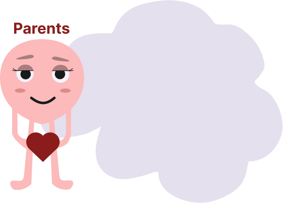

Partnership·November 2025·Delivered
TikTok Family Academy — Egypt, Second Edition
TikTok's regional digital-safety and family-wellbeing programme came to Egypt with Welmnt as its named mental-health partner, hosted at The International School of Choueifat in 6th of October. Parents, teachers and press in the room; cyberbullying and adolescent mental health on the agenda.
Read the case study ↓